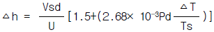
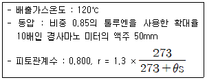
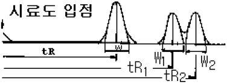
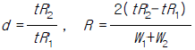
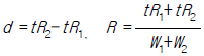
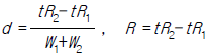
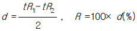

1과목: 대기오염 개론
1. 다음 업종 가운데 그 생산공정에서 황화수소가 발생 할 가능성이 가장 적은 것은?
2. 대기 중의 CO2에 관한 설명으로 알맞지 않는 것은?
3. 다음 중 온실효과(Green House Effect)에 관한 내용으로 알맞지 않는 것은?
4. 맑은 여름날 해가 뜬 후 부터 오후 최고기온이 나타나는 시간까지의 연기의 분산형을 가장 바르게 순서대로 나타낸 것은?
5. 다음의 대기오염물질 중에서 고등식물에 대한 독성이 가장 큰 것은?
6. CO(일산화탄소)에 관한 설명으로 적당하지 않는 것은?
7. 이산화황 1 V/V ppm에 상당하는 W/W ppm으로 맞는 것은? (단, 0℃, 1기압 , 공기밀도 1.293kg/m3 기준 )
8. 180℃, 0.8atm에서 SO2농도가 0.25g/m3 이라면 표준상태에서는 몇 ppm인가?
9. 먼지입자의 크기에 관한 설명으로 알맞지 않은 것은?
10. 0.2V/V%의 SO2를 포함하고 발생량이 500Sm3/min인 매연의 30%가 년간 같은 방향으로 흘러가 그 지역의 식물에 피해를 주었다. 10년 후에 그 지역에 살아남은 수목이 전체의 1/10 이였을 때 10년간 이 지역에 피해를 준 SO2량은?
11. 다이옥신에 관한 설명으로 알맞지 않은 것은?
12. 다음 중 무색기체로 CO와 같이 혈액 중의 Hb와 결합하여 산소 운반능력을 감소시키는 기체는?
13. 아래 자료를 이용 유효굴뚝 높이를 구한 값은? [굴뚝높이 258m, 안지름 1.15m, 풍속 3.7m/sec, 기온 18℃, 대기압 1000 millibar, 굴뚝가스속도 10m/sec, 굴뚝가스 온도 152℃] (단,

를 적용)14. 태양상수를 이용하여 지구표면의 단위면적이 1분동안에 받는 평균 태양에너지를 구하는 식으로 적절한 것은? (단, CM: 평균 태양에너지, C:태양상수, R :지구반지름)
15. 지표의 온도가 25℃이고, 1000m 높이에서의 대기온도가 5℃일 때 안정도는?
16. 침강역전(subsidence inversion)에 대한 설명으로 알맞지 않은 것은?
17. Richardson수(數):R 에 관한 설명으로 알맞지 않은 것은?
18. 분산모델의 장점 및 특징이라 볼 수 없는 것은?
19. 대기오염물질인 SO2는 1차 대기반응에 의해서 다른 물질로 변환한다고 가정하고, SO2가 대기 중에서 반감기가 4시간이라면 배출된 SO2가 초기농도의 10%에 도달하는데 소요되는 시간은 얼마인가?
20. 분산모델 중 Box Model에 관한 설명이다. 바르지 않은 것은?(오류 신고가 접수된 문제입니다. 반드시 정답과 해설을 확인하시기 바랍니다.)
2과목: 연소공학
21. 수소 20%, 수분 20%인 액체연료의 고위발열량이 15,000(㎉/㎏)일 때, 저위 발열량(㎉/㎏)은?
22. 가로, 세로, 높이가 각각 3m, 1m, 1.5m인 연소실에서 연소실 열발생율을 2.5 x 105kcal/m3ㆍ hr가 되도록 하려면 1시간에 중유를 몇 kg 연소시켜야 하는가? (단, 중유의 저위발열량은 11,000kcal/kg이다.)
23. 용적비로 C3H8과 C4H10이 1 : 3으로 혼합된 가스 1Sm3를 완전연소 할 경우 발생되는 CO2량[Sm3]은?
24. 부탄(C4H10) 몇 kg을 완전연소하면 이론적 필요한 공기량이 775kg-air이 되겠는가?
25. 탄소 86%, 수소 13%, 황 1%의 조성인 중유를 연소하고 배기가스를 분석했더니 CO2+SO2가 13%, O2가 3%, CO가 0.5%이었다. 건연소 가스중 SO2농도는?
26. 배출가스 분석결과 (CO2)=13.2%, (O2)=6.6%, (N2)=80.2% (CO)=0.0%일 때 (CO2)max와 공기 과잉계수 m은?
27. 유동층 소각로의 장점과 가장 거리가 먼 것은?
28. 가연성 가스의 폭발범위 및 그 위험도에 관한 설명으로 틀린 것은?
29. 1mole의 프로판이 완전연소할 때의 AFR은? (단, 부피기준 )
30. 1.5%(무게기준)유황을 함유한 석탄 2ton을 완전연소시키면 표준상태에서 SO2 발생량은 몇 m3인가? (단, 황분은 전량 SO2 로 전환 )
31. '그을음' 발생에 관한 설명으로 틀린 것은?
32. 저발열량이 10,000kcaㅣ/kg, 이론 공기량이 11Nm3/kg, 이론 연소가스량이 11.5Nm3/kg의 중유를 공기비 1.2로 완전연소할 때 이론가스의 온도는? (단, 공기 및 중유의 온도는 20℃, 연소가스의 비열은 0.4kcal/Nm3℃, 건조가스기준 )
33. 프로판과 부탄의 부피를 1:1로 혼합한 연료를 완전연소한 결과 건조연소가스내의 CO2농도가 10% 라면, 이 연료를 5m3 완전연소할 때 생성되는 건조연소가스량(Sm3)은?
34. 액체연료를 효율적으로 연소시키기 위해서는 연료를 미립화 하여야 한다. 미립화특성을 결정하는 인자와 가장 관계가 적은 것은?
35. 확산형 가스버너인 포트형을 설계시 주의사항 중 틀린것은?
36. 액체연료중 중유의 성상에 관한 다음의 기술 중 잘못된것은?
37. 탄소 85%, 수소 15%의 액체연료를 매시 100kg 연소하는 경우, 연소배기가스의 분석결과 CO2 : 12%, O2 : 4%, N2 : 84%이었다면 1시간당 연소용 공기량[Sm3]은?
38. 기체연료에 관한 설명으로 틀린 것은?
39. 수증기를 완전가스로 본다면 표준상태에서의 비체적(m3/kg)은?
40. 연료 등의 연소시 과잉공기의 비율을 높임으로써 생기는 현상과 가장 거리가 먼 것은?
3과목: 대기오염 방지기술
41. 가로 4m, 세로 5m인 두 집진판이 평행하게 설치되어 있고 두판 사이의 중간에 원형철심 방전극이 위치하고 있는 전기집진장치에 굴뚝가스가 1.5 m3/s로 통과하고, 입자이동 속도가 0.085 m/s일 때 집진효율은?
42. 탈취방법 중 '수세법'에 관한 설명과 가장 거리가 먼 것은?
43. 아래의 유해가스들을 처리하기 위한 방법중 잘못 연결된 것은?
44. 다음 가스 흡수법에 사용되는 흡수액이 갖추어야 할 요건 중 맞는 것은?
45. 물리흡착에 대한 설명으로 옳지 않은 것은?
46. 부피비로 염화수소 0.7%인 배출가스 3000Sm3/hr를 수산화칼슘으로 처리하여 염화수소를 완전히 제거하기 위한 수산화칼슘의 시간당 필요량은? (단, Ca:40 )
47. 원심력집진기에 관한 내용으로 알맞지 않은 것은?
48. 공기중에 CO2 가스의 부피가 5%를 넘으면 인체에 해롭다고 한다면 지금 300m3 되는 방에서 문을 닫고 80%의 탄소를 가진 숯을 몇 kg을 태우면 해로운 상태로 되겠는가? (단, 기존의 공기중 CO2 가스의 부피는 고려하지 않음, 표준상태 기준)
49. 흡착제의 종류에 따른 일반적인 용도가 잘못 연결된 것은? (단, 흡착제 - 용도)
50. 헨리의 법칙에 따르는 유해가스가 물속에 2.0k㏖/m3 만큼 용해되어 있을 때, 분압이 258.4㎜ 수주였다면, 이 유해가스의 분압이 38㎜Hg로 될 때 물속의 유해가스 농도는?
51. Duct중의 배기 gas의 유속을 pitot관(pitot계수:1)으로 측정하였다. 동압의 측정을 위하여 내부에 비중 0.85의 toluene을 담고 있는 확대율 5배의 경사관 압력계(manometer)를 사용하였는데 동압은 경사관의 액주로 80㎜이었다. 이 경우 배기가스의 유속은? (단, 가스 밀도는 상온, 상압에서 1.2㎏/m3이었다.)
52. 흡수탑에서 기-액의 접촉면적을 크게 하는 것이 필요한데 실제 단위 체적당 유효접촉면적 a(m2/m3)을 구하기가 쉽지 않으므로 액상 총괄물질이동계수 KL과의 곱인 KLㆍa를 계수로 사용한다. 이 계수를 무엇이라 하는가?
53. 유해가스를 제거하기 위한 방법 중 연소 및 산화에 관한 설명으로 틀린 것은?
54. 다음 중 가스분산형 흡수장치로만 짝지어진 것으로 가장 알맞는 것은?
55. 전기집진기 사용시 적용되는 용어 중 '비저항'(겉보기 전기저항률)에 관련된 설명으로 옳지 않은 것은?
56. 화학공장에서 발생하며 감지농도가 약 0.047ppm인 의약품 냄새가 나는 악취물질로 가장 적절한 것은?
57. 원심형 송풍기의 성능을 설명하였다. 알맞은 것은?
58. 후드의 포착속도(Capture Velocity)에 관한 설명으로 알맞는 것은?
59. 입구에서의 분진농도가 10 g/Sm3인 함진가스를 여과집진장치를 이용하여 출구에서의 분진농도를 0.5 g/Sm3으로 유지하고자 한다. 이 여과집진장치는 분진부하가 300g/m2일 때 탈진해주어야 한다면 탈진주기(min)는? (단, 이 때 겉보기여과속도는 2 cm/s이다.)
60. 황성분이 2%(중량기준)인 중유를 20 ton/hr으로 연소하는 시설에서 배기가스 중 SO2를 CaCO3로써 완전탈황할 경우 필요한 이론 CaCO3 양은? (단, 중유 중 S는 모두 SO2로 전환되며 Ca의 원자량:40)
4과목: 대기오염 공정시험기준(방법)
61. 용액의 농도에 관한 설명 중 틀린 것은?
62. 먼지실측농도가 210mg/Sm3이고 실측 산소농도가 3.5%이다 표준산소 농도로 보정한 먼지농도(mg/Sm3)는? (단, 표준산소 농도: 4% )
63. 연료의 연소, 금속제련 등에서 배출하는 굴뚝배출 가스 중의 일산화탄소를 분석하는 방법과 가장 거리가 먼 것은?
64. 굴뚝 등에서 배출되는 배출가스 중의 무기 불소 화합물 분석에 대한 설명중에서 틀린 것은?
65. 비분산 적외선 분석계의 구성(순서)으로 가장 적절한 것은? (단, 단광속 분석계인 경우 )
66. 배출구 시료(먼지측정)채취시 등속 흡인을 위하여 내경 10mm의 원형 노즐(보통형 흡인노즐)을 사용할 때 배출가스 속도 16m/sec, 배출가스중 수증기의 백분율은 14%, 가스미터의 흡인가스 온도는 50℃, 배출가스 온도 100℃ 대기압은 760mmHg, 측정점에서의 정압은 750mmHg, 습식가스 미터내의 게이지 가스압은 900mmHg, 가스미터로 흡입되는 가스의 수증기 포화압은 90mmHg 이다. 이 때 가스 미터에 있어서의 분당 등속 흡인된 공기량은?
67. 크로모트로핀산법으로 포름알데히드를 정량할 때 흡수 발색액 제조에 필요한 시약은?
68. 굴뚝중의 배출가스의 유속을 피토관으로 측정하였다. 측정조건이 다음과 같다면 유속은?

69. 대기오염공정시험법의 배출허용기준시헙법(흡광광도법)에서 브롬화합물을 분석하는 시약에 관한 내용으로 알맞지 않는 것은?
70. 직경이 2.5m인 원형굴뚝의 먼지측정을 위한 측정점수는?
71. 대기오염공정시험방법상 굴뚝 배출가스 중 총탄화수소의 측정에 관한 설명으로 틀린 것은?
72. 그림의 가스크로마토그램 예에서 두 개의 접근한 피이크(peak)의 분리정도를 나타내기 위하여 분리계수 또는 분리도를 가지고 분리능을 구한다. 다음 중 분리계수(d)와 분리도(R)를 구하는 식으로 맞는 것은?





73. 원자흡광광도법 적용시 사용되는 용어의 정의로 잘못된것은?
74. 시료중의 페놀류를 수산화나트륨용액(0.4w/v%)에 흡수시킨 포집액을 발색제로 발색시 알맞은 pH범위는? (단, 흡광광도법 기준, 굴뚝배출가스중의 페놀류)
75. 다음 중 분석대상 가스와 흡수액을 연결한 것이다. 옳지 않은 것은?
76. 황화수소를 요오드 적정법으로 정량할 때 종말점의 판단을 위한 지시약은?
77. 소각로, 소각시설 및 그 밖의 배출원에서 배출되는 입자상 및 가스상 수은의 측정, 분석에 관한 설명으로 틀린것은?
78. 링겔만 매연농도표법을 이용한 매연 측정에 관한 내용 중 틀린 것은?
79. 카드뮴화합물을 채취한 시료는 그의 성상에 따라 아래와 같은 처리방법에 의하여 처리한 후 분석시료 용액을 조제 한다. 이중 처리방법이 틀린 것은?
80. 환경기준시험을 위한 항목별 분석방법이 옳지 못한 것은?
5과목: 대기환경관계법규
81. 대기환경보전법상 특정대기유해물질이 아닌 것은?
82. 배출허용기준을 초과하여 조치된 개선명령에 따라 사업자가 시ㆍ 도지사에게 제출하는 개선계획서에 포함되거나 첨부되어야 할 사항이 아닌 것은? (단, 개선사항이 배출시설 및 방지시설인 경우)
83. 연료별 고체연료 환산계수를 나타내고 있다. 이중 옳지 않은 것은?
84. 현장에서 배출허용기준초과여부를 판정할 수 있는 오염물질이 아닌 것은?
85. 2001년 1월1일부터 2002년 6월30일까지의 제작자동차중 경유를 사용하는 대형자동차의 배출가스보증기간은?
86. 경유를 사용하는 자동차의 배출가스중 대통령령이 정하는 오염물질과 가장 거리가 먼 것은? (단, 제작차 기준)
87. 대기환경규제지역의 환경기준을 달성하기 위해 수립하는 실천계획에 포함되어야 할 사항과 가장 거리가 먼 것은?
88. 염소를 직접 사용하는 모든 배출시설의 염소 배출허용기준으로 적절한 것은?
89. 공동방지시설을 설치하고자 하는 공동방지시설운영기구의 대표자가 제출하여야 하는 서류와 거리가 먼 것은?
90. 비산먼지 발생을 억제하기 위한 시설의 설치 및 필요한 조치중 야적(분체상 물질을 야적하는 경우에 한한다.)에 관한 기준으로 알맞지 않은 것은?
91. 기본부과금의 경우 징수 유예기간과 그 기간중 분할납부 회수로 적절한 것은?
92. 배출부과금을 부과하지 않는 자라 볼 수 없는 것은?
93. 사업장별 환경관리인 자격기준에 관한 설명으로 적절치 않는 것은?
94. 환경부장관이 설치하는 대기오염측정망의 종류에 해당되지 않는 것은?
95. 대기경보단계 중 '경보'단계를 발령하여야 하는 경우로 가장 적절한 것은?
96. 배출시설 및 방지시설과 관련되어 1차 행정처분으로 조업을 정지시키는 경우가 아닌 것은?
97. 생활악취시설의 개선계획서 제출기한으로 적절한 것은?
98. 악취 측정방법 중 공기희석관능법을 기준으로 하는 배출허용기준으로 적절한 것은?
99. 자동차제작자가 변경인증을 받지 아니하고 자동차를 제작한자에 대한 벌칙규정은?
100. 다음 중 생활악취시설에 대한 내용으로 적절치 못한 것은?